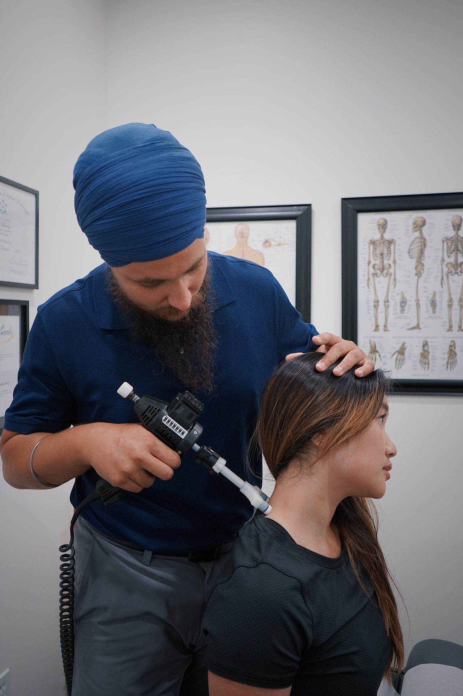

First Choice Integrated Healthcare
Chiropractic care and physical therapy in Knoxville, under one roof.

About
First Choice Integrated Healthcare is a chiropractic and physical therapy clinic at 4600 Chapman Highway in Knoxville, Tennessee. Care covers chiropractic care, physical therapy, regenerative medicine, trigger point therapy, nutritional guidance, and sports injury treatment. Provider Dr. John Barber earned his undergraduate degree at UT Martin in 2004 and his doctorate at Logan University in 2008. Same-day appointments are mentioned on the clinic's own site.
Care
Chiropractic care
Chiropractic care for back and neck pain, sciatica, herniated discs, headaches, and spinal conditions.
Physical therapy
Physical therapy for auto injuries, sports injuries, and knee and shoulder pain.
Regenerative medicine
Regenerative medicine as part of integrated care.
Trigger point therapy
Trigger point therapy for chronic pain.
Nutritional guidance
Nutritional guidance alongside hands-on care.
Sports injury treatment
Treatment for sports injuries and chronic pain.
Meet Dr. John Barber
Dr. John Barber: UT Martin, 2004; doctorate from Logan University, 2008. Call (865) 344-6636 or email firstchoiceintegrated@gmail.com to ask about same-day appointments.
Gallery


All gallery photos are stock photos, labeled as such. They show the kind of work and setting described on this page, not this business.
Visit
Address: 4600 Chapman Hwy, Knoxville, TN 37920
Hours: Monday, Wednesday, and Thursday 9:00 AM to 12:00 PM and 3:00 PM to 6:00 PM; Tuesday 3:00 PM to 6:00 PM only; Friday, Saturday, and Sunday closed.
Phone: (865) 344-6636
Contact
Call (865) 344-6636 Email firstchoiceintegrated@gmail.com
First Choice Integrated Healthcare serves Knoxville, TN. Questions? Call (865) 344-6636.